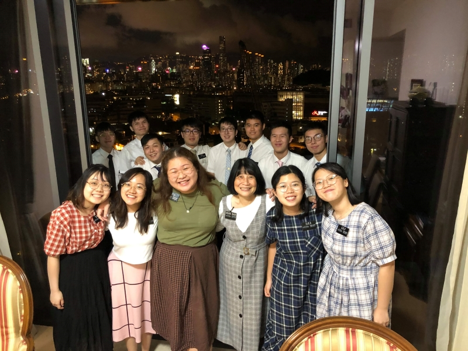
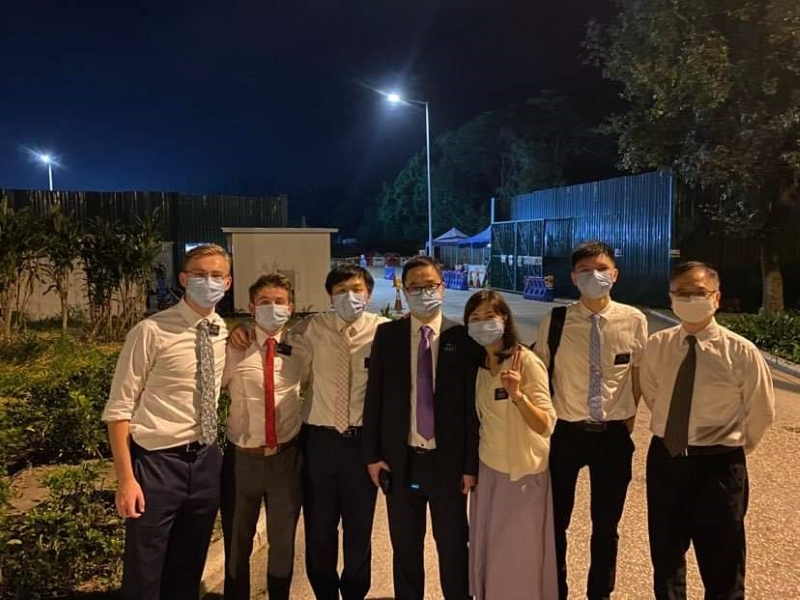

When I first come out to be a missionary, we are already in field. We have online MTC in the morning and afternoon. Back to the field at night time. Got two training at the same time
This is the picture that my online MTC distirct. Some of them are studying here at BYU-Hawaii too.
One of the baptism host in my area and she is a grandma of my firend.
almost their whole family are church member and grandma should be the last one got baptisted, that's why they are really happy and felt joy.
This is my second served area. They both got baptisted at the same time. My companion and I tauch them about the gospel.
Back to the beginning, There were only 13 of us in China Hong Kong Mission because the beginning of COVID Hong Kong border was closed.
Only local missionaries can serve in Hong Kong and we were the one who chosen to serve in Hong Kong during COVID-19. Most of us were not called to serve in Hong Kong.
This is the mission conference that more local missionaries come out to serve and we hosted a "Mission Conference" at a farm.
We called it Mission Conference because it is the whole mission only 18 of us.
This is a picture that more missionaries from the US started come back to Hong Kong, they were the missionaries who took emergency return home missionaries and they come back to serve again.
It was around 9months I was serving my mission. We went back to have a mission conference again in the same farm.
We serving our mission in China Hong Kong, of course we have to celebrate Lunar New Year. We were in trio copaionship, served as Mission Office Elder. As a local missionries, mission president allowed us to go back home for 3hours to enjoy our familt
